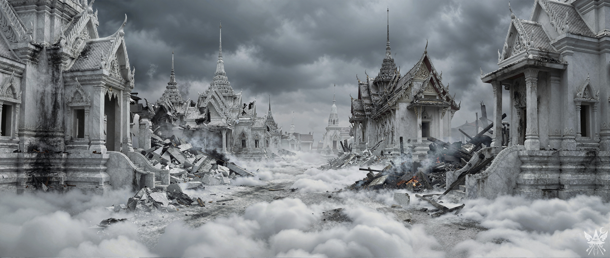
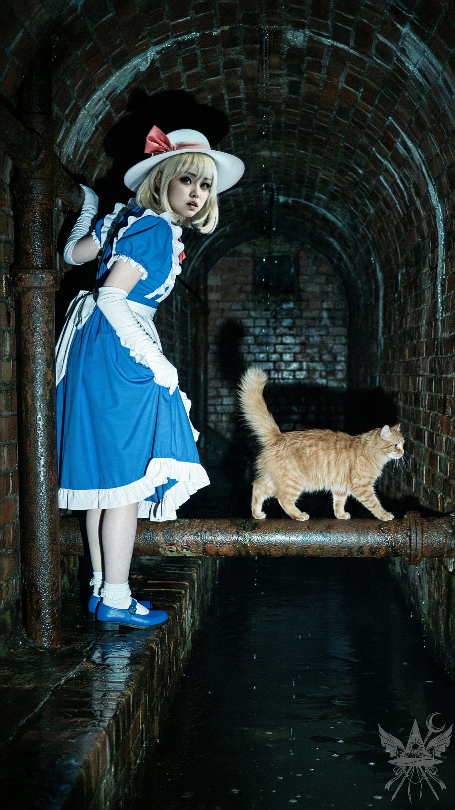

第89章 システムへの侵入
地下の隠れ家には、スパイスと燻製肉、そして茹で野菜の匂いが淀んだ空気に混ざり合っていた。ベージュ色の粗いコンクリート壁に囲まれた空間には、革張りのソファとゆったりとした肘掛け椅子、無造作に敷かれた二つの布団が転がっている。ルイズが長年使い込んできた「事務所」特有の、俗っぽく退廃的な空気が漂っていた。
階下からは、重低音のドラムと不協和音が絶え間なく鼓膜を震わせている。世界の終わりが迫ろうとも享楽に耽る阿呆ども。全く、救いようがない。
天使の革命家たちの朝食に幻覚剤を盛り、ルイズに襲撃させて緋想の剣を奪う。そんな短絡的な計画も頭をよぎったが、即座に棄却した。あの狂信的な天子が仮面を易々と手放すとは思えない。無用な厄介事はご免だ。
ルイズには目先の利益を与えて外へ追い払い、その隙にこちらの大仕事を進めるのが上策だ。目標は、文書を使った極めて官僚的で悪辣な手段で、龍神と閻魔の繋がりを完全に断ち切ること。
「あら、外の天使たちに朝食でも売れば、飛ぶように売れるんじゃないかしら？」
微笑みかけながら儲け話を持ちかけると、ルイズは満足げに片目を閉じ、深く頷いた。
「いい考えね。それじゃあ、少し稼いできましょうか」
彼女は足早に部屋を後にした。
残された静寂の中、ソクラテスは撫でられて心地よさそうに喉を鳴らしている。そのベージュ色の毛並みに顔を近づけた。
「ねえ、猫ちゃん。私たちの計画が上手くいくと信じているのなら、彼岸まで案内してくれないかしら？ カナ、どう思う？」
カナは冷ややかな視線を猫に向けた。
「構わないわ。でも、前に私をガラクタ呼ばわりして置き去りにしたのは、どこのどなただったかしらね」
ソクラテスは目を細めたまま、忌々しそうに尻尾を揺らす。
「バカな真似をしなければ、置いていくようなことはしないニャ。お前は上手く書類を盗み出したんだ。……まだ期待はしてやるニャ」
「猫ちゃんに褒められるなんて光栄だわ」
険悪になりかける空気を流し、低いコーヒーテーブルへと向かった。書類を広げるにはちょうどいい。
「いい考えがあるわ。閻魔との賃貸借契約を解除する書類が必要だったわね。少し趣向を変えてみましょう。カナ、贈与契約書って書けるかしら？」
「贈与契約書……」
カナの瞳に、悪戯な光が宿った。
「つまり、龍神が自分の領土を閻魔に無償で譲渡するってことね？」
「ええ、その通りよ」
カナは起き上がり、思案気に腕を組む。
「見本がないと厳しいわね。それっぽくでっち上げることはできても、相手はルール作りの専門家よ。誤魔化しきれるかどうか……」
ソクラテスが鼻先をひくつかせた。
「メデアにしては、悪くないアイデアだニャ。形式なら俺が覚えている。俺の言う通りに書くんだニャ」
カナは数分間、真剣な面持ちでペンを走らせた。その筆跡には迷いがなく、最後に賃貸借契約書から龍神の署名を見事に模写してみせた。
「もし、龍神本人の立ち会いを求められたらどうするの？」
懸念を口にする。
「その時は衣玖の委任状もでっち上げて、お前たちのどっちかがあいつのフリをするんだニャ。まあ、委任状がなくても通るとは思うがニャ」
準備を整え、台所へと向かう。手早くリュックサックに塩煎餅、燻製肉、ドライフルーツを詰め込んだ。いつ次の食事にありつけるか分からない状況だ。水筒に水を満たし、カナはルイズ宛てに「すぐ戻る」と走り書きを残した。
カナはアジトの構造を熟知しており、市場近くの通用口まではすぐに辿り着いた。外へ出ると、冷たく湿った重い空気が肺にまとわりついてきた。
頭上を覆い尽くす暗雲と、足元でうねる分厚い雲海。天界の象徴であった白亜の寺院群は無残に粉砕され、鋭角に割れた巨大な石ブロックが折り重なっている。粉塵と焦げた匂いが鼻を突き、局所的に燻る炎のオレンジ色が、かつての神聖な都の死を視覚的に叩きつけてくる。これほどの大規模な破壊の爪痕が残っているというのに、動くものはおろか生命の気配すら一切感じられない徹底した静寂が支配していた。

上空を見上げれば、勝利の余韻に浸る天使たちが悠々と飛び回っている。彼らの石造りの拠点は無傷のようだが、この天国の都が二度と元の姿を取り戻すことはないだろう。
「しーっ！」
先を行くソクラテスが不意に足を止めた。路地の壁に身を寄せ、廃墟の隙間から息を潜める。
焼け跡の向こうに、黒装束の男が立っていた。手にした小型機器のレンズを、崩れた寺院へと向けている。
「驚いたかニャ？ 死神だってハイテク機器くらい使いこなせるんだニャ」
男が立ち去るのを待ち、再び廃墟の影を這うように進む。足音に過敏になりながら裏路地を抜け、砂に埋もれたマンホールへと辿り着いた。格子蓋をずらし、暗い縦穴へ梯子を下ろす。
「それで、ポータルはどこにあるの？」
声を潜めて尋ねると、暗渠の底から猫の低い声が響いた。
「やつらは街中を監視しているからニャ。広場に分かりやすい通路なんて作ってくれないニャ。組織を危険にさらすなんて愚の骨頂だニャ。抜け穴を見つけられるのは、その場所を知っているやつだけだニャ」

梯子を下りきり、魔法の光を放つと、強烈な腐敗臭が鼻腔を殴りつけた。湿度に塗れた冷たい空気と、錆びた鉄の匂い。赤茶けたレンガの壁面は黒光りし、澱んだ暗い水路の上を、赤錆の浮いたパイプが無数に這っている。
手にした光が容赦なく地下の汚濁を暴き出す中、ふと横に立つカナの姿が酷く異質に映った。いつの間にか黄土色の法衣を脱ぎ捨て、あの鮮やかな青いドレスと白い帽子姿に戻っている。この不快な暗渠に、彼女の汚れを知らない清潔さは強烈な違和感を放っていた。
前方を歩くソクラテスは、器用に錆びた鉄パイプの上を渡っていく。
「ねえ、メデア。彼岸で何をするつもり？」
汚水に塗れないよう気をつけながら進むカナが、小声で尋ねてきた。
「閻魔のデータベースから私たちの情報を削除する。そうすれば、閻魔に知られても、もう召喚も転生もされないわ」
カナはさらに声を潜める。
「私ならデータベースごと壊すわ。さっさとこの世界、変えないと」
「でも、ソクラテスは今はまだダメだと言っていたわ。ミラーサーバーがあるから」
「物理的に壊せばいいだけよ。それに……メデア、気づいてないの？ あの猫、絶対何か企んでるわ。データベースを削除したり、死をなくしたりなんて、本気で考えてない。閻魔を倒して、自分が新しい支配者になろうとしているのよ、きっと」
「どうしてそう思うの？」
「考えてもみてよ。元主任技師でしょ？ 偉かったのに、あんなみすぼらしい猫の姿になっているなんて。正義感で動くなんて考えられないわ。復讐よ、きっと」
汚水路にかかる鉄格子を渡りながら、内心で思考を巡らせる。確かにカナの言い分にも一理あるが、カナ自身もどこまで本心を語っているか怪しいものだ。
「うーん……まだわからないわ。自分で確かめないといけない」
「騙されないでよ。あいつ、言葉巧みにメデアを操ろうとしているわ。嘘はつかないけれど、都合のいい情報だけ小出しにして、私たちを誘導しているのよ」
「ほら、ぼーっとしている場合じゃないぞ！ 着いたニャ」
暗渠の突き当たり。そこに、取っ手のない半円形の金属ドアがあった。小さなパネルと鈍く光るプレートが埋め込まれている。
ソクラテスが肩に飛び乗り、燃えるような瞳でパネルを見据えた。
「バイオメトリックセンサーだニャ。プレートに触れるんだニャ」
「でも、どうやって……」
「我々……いや、閻魔どもはシステムを改良したかもしれないが、コアプログラムを解析できるほど賢くはなかったと思うニャ。俺はあちこちに抜け穴を用意してあるニャ。開発者だって、いつ締め出されるかわからないからニャ。それに……誰が誘惑に勝てるっていうんだニャ？」
彼は自嘲気味に鼻先でセンサーを指した。
「もちろん、やつらも対策はしていたニャ。人間に転生させられるのはまっぴらごめんニャ。誰が喜んで動物に生まれ変わりたいと思うニャ？ ……特別な操作が必要だニャ。右手の人差し指を右上隅に、左手の人差し指を左下隅に置いてニャ。……よし、そのまま同時に横にスライドさせてほしいニャ」
指示通りに指を這わせると、重厚なドアが音もなく滑らかに開いた。杖を拾い上げ、両手が自由になったのを確認してから、ドアをそっと閉める。
「おめでとう。ここからはもう彼岸だニャ。時空のワームホールを通って、今は兵舎の地下だニャ。サーバー室まではまだ遠いぞニャ」
「ここでも見つかる可能性はあるの？」
「そうだニャ。だから急ごうニャ」
緑と白のツートンカラーの壁を、無機質な蛍光灯が照らし出している。相変わらず趣味の悪い、殺風景な地下倉庫だ。
手すりのついた階段を上がると、強烈な生臭さが鼻をついた。男たちが雑魚寝する部屋特有の、むっとする体臭と汗の匂い。兵舎には二段ベッドが整然と並び、ロッカーが開け放たれている。
「……誰だ？」
不意に声がした。右側のベッドで、布団にくるまった死神が一人、こちらを訝しげに見据えている。招集をサボっていたらしい。
カナが素早く男に歩み寄り、冷たく言い放つ。
「抜き打ち検査よ。なぜ持ち場を離れているの？」
彼女は手の中の紙切れを、男の鼻先でちらつかせた。
「えっと……俺は……腹が……その……なんでアンタら、制服着てねえんすか？」
「質問するのはこっちよ！ 特別な任務中でね、兵士の持ち物を全部検査するように命令されているんだから」
圧倒された男はもじもじとベッドから降り、慌てて着物を羽織り始めた。
「え……あ、そうなんすか……じゃあ、俺は……行っても……いいんすか……？」
「待ちなさい。あんたの顔は覚えたわ。もし他の兵士たちが、自分の持ち物が定期的に検査されていると知ったら、どうなるかわかっているわよね？」
「は、はい！ 了解です！」
死神は帯も締めずに部屋を飛び出していった。
カナは開いたロッカーから、予備の女性用着物を二着引っぱり出した。手早く着替えを済ませ、黒い死神の姿になる。
「ところで、さっきの身分証みたいなもの、どこで手に入れたのよ？」
尋ねると、カナは意地悪く微笑んで紙切れを広げた。
「これ？ まあ、正確には身分証じゃないんだけど……」
そこには『燻製肉スープ レシピ 材料：燻製肉500g、バジル1束、ニンジン…』と記されていた。
兵舎を抜け、容赦なく照りつける太陽から逃れるように建物の陰へ身を潜める。

そこには、果てしなく続く官僚機構の墓標のような光景が広がっていた。右側には巨大なコンクリートの壁がそびえ立ち、黒い雨染みが涙のように垂れ下がっている。無機質なグリッド状の窓が無限に並び、永遠に続く事務処理の徒労感を漂わせている。
左側に目を向ければ、鉛色に淀んだ三途の川の岸辺を、鮮血のような真紅の彼岸花が絨毯のように覆い尽くしていた。この灰色の世界で唯一、痛々しいほどの赤色が、生と死の境界線を暴力的に描き出している。
「懐かしいニャ！ サーバー室は議事堂の別館だニャ。急ごうニャ！」
ソクラテスが肩の上で喉を鳴らした。
コンクリートのカビ臭さと、川面から流れる湿った重たい風が肺にへばりつく。遠くの群生地では、長柄武器を構えた黒装束の集団が軍事教練を行っているのが小さく見え、近くの舗装路でも、帳面を抱えた死神たちが俯き加減で黙々と歩き去っていく。
（いつもの巡回かしら？ それとも、いよいよ開戦か？）
別館のロックされていないドアを抜け、内部へ侵入した。上層階には末端職員のオフィスが詰め込まれているらしいが、受付の警備員は黒装束の私たちを見るなり、無関心に通行を許可した。
いくつもの廊下をすり抜け、立ち入り禁止区域のバイオメトリックロックも先ほどの手順で解除する。辿り着いたのは、閻魔の支配領域を監視する防諜部だ。今日は騒動のせいか職員はほとんどいないようだが、決して油断はできない。
防諜部員は全員の顔を覚えているのだから。
サーバー室の配置を熟知しているソクラテスは、迷いなく下の階へ続く階段を降りていく。しかし不意に動きを止め、その背中の毛を逆立てた。
下から、複数の重い足音が近づいてくる。
逃げ場も隠れ場所もない一本道。考える間もなく、ソクラテスは天井の換気口へ視線を送った。素早く跳躍して格子を外し、埃まみれのダクトへ滑り込む。カナの手を引き上げ、暗がりに身を潜めた直後、真下を黒いマントを羽織った三人の男が通り過ぎていった。
「つまり、俺たちは介入する権利がないってわけか？」
「戦争が議会の利益にならない限り、権限乱用で訴えられる……」
足音とくぐもった声が遠ざかる。降りようとした矢先、今度は通路の奥からも別の足音が迫ってきた。戻るのは危険すぎる。
「真っすぐだニャ。ここからもサーバー室に行けるニャ」
ソクラテスが喉の奥で低く唸る。
「猫には簡単よね。『真っすぐ』だなんて」
カナが暗闇の中で毒づいた。
ソクラテスは狭い金属ダクトの中を音もなく駆け抜けていくが、メデアとカナにとっては腹這いで進むしかない息苦しい空間だ。カナは途中で帽子を引っ掛け、僅かに遅れをとった。直後、眼下から慌ただしい足音と、短いベルの音が二度響く。
「シューッ」
と、前方のソクラテスが威嚇するように息を吐いた。
「メデア、カナはサーバーをぶっ壊すつもりだニャ。絶対に止めなきゃダメだニャ。俺の言うことを聞くんだニャ」
「どうして？」
「データベースが消えたら、閻魔は頭に血が上るだけだニャ。どんな手を使ってでも復旧させようとするだろうニャ」
「待って。私たちは転生するたびに記憶を消される運命から、この世界を解放しようとしているんじゃないの？」
問いかけに、ソクラテスは一瞬沈黙した。
「それは違うニャ。世界の秩序を壊したら、混乱を招くだけだニャ。それが摂理だニャ、メデア。善悪を判断するのは君じゃない。俺たちはシステムを少し手直しするだけだニャ」
やはり、カナの推測通りか。こいつの目的は世界の解放などではない。
ダクトは垂直の縦穴に行き着き、慎重に下へと降り立つ。後から這い出してきたカナの姿を見て、ソクラテスが忌々しげに舌打ちをした。
「チッ……こんなところにもモーションセンサーかニャ」
行き止まりの細長い部屋。薄暗い壁面には、無数の小さな電球が埋め込まれている。
「こいつらを遮ると……警報だけじゃ済まないニャ。レーザーが飛んでくるニャ」
飛んで突破する以外に道はない。着物の裾を帯に深く挟み込み、裸足で冷たい床を踏みしめる。交差する不可視の線を縫うように跳躍した。
一列目は難なく通過。しかし二列目はセンサーが斜めに配置されており、空中で体を捻る必要がある。待ちきれなくなったカナが勘に任せて飛び出し、見事に着地した。焦げ臭い匂いと共に彼女の帽子の一部が炭化したが、警報は鳴らない。
「ったく……」
と猫が呆れたように鼻を鳴らす。
次はメデアの番だ。センサーの明滅パターンを読み、時計回りに動く瞬間を狙って一気に床を蹴った。
閃光。そして、鋭い痛みが手のひらを貫く。
血は出ていないが、肉が焼ける強烈な熱に顔が歪んだ。
（しまった……！）
同時に、肩に乗っていたソクラテスが悲鳴を上げた。尻尾の先が見事に切断されている。
冷や汗を拭いながら、最奥のドアに張り付く。
今度は音声認証ロックだ。ソクラテスが鼻先でセンサーを嗅ぎ回り、歯を食いしばって囁く。
「ここは簡単だニャ……二回手を叩いて、マイクに息を吹きかけるだけだニャ」
火傷の痛みを堪えて二度拍手し、マイクへ息を吹きかける。重い電子音と共にドアのロックが外れ、背後のレーザーも完全に消滅した。
開かれた扉の向こうは、夢で見たあの場所だった。
巨大なサーバーラックが壁のように立ち並び、無数の冷却ファンが耳をつんざくような轟音を立てている。吐き出される熱風が肌を叩き、オゾンと古い電子部品の匂いが充満していた。
休む暇もなく、部屋の隅に置かれたデスクトップPCの前に座る。黄ばんだキーボード、擦り切れたマウス、そして古びたブラウン管モニター。劣悪な環境だが、選り好みはしていられない。
ふと右側に視線をやると、あの夢で見た鏡があった。だが、そこに映っているのはかつての皇后ではなく、煤と汗に塗れた現在のメデアの姿だ。
PCを操作する傍ら、カナはサーバーラックの間を飛び回り、太い電源コードやケーブルを乱暴に弄り回している。
マウスを動かすとモニターが点灯し、ログイン画面が浮かび上がった。
「今すぐ『再起動』ボタンを押して、それからすぐにあのキーを押しっぱなしにするんだニャ」
肩の痛みに耐えながらソクラテスが指示を飛ばす。
再起動がかかると、黒い画面に創造主の言語の文字列が滝のように流れ落ちてきた。指示通りに操作し、自動起動の設定画面からネットワーク起動に変更、指定のIPアドレスを打ち込む。
「このマシンには、俺用に調整したバックドアが仕込んであるんだニャ」
得意げに喉を鳴らすソクラテスが左肩に、そしていつの間にか戻ってきたカナが右肩に陣取った。
ログイン画面を迂回し、データベース管理システムが起動する。創造主の言語でクエリを入力するフィールドが並んでいた。
「よし、まずはミラーリング機能を見つけて、完全に消去するニャ」
設定画面を辿り、
『データベースミラーリング』
の項目を削除する。PCの駆動音が一段と高くなった。
「次は、自分たちをデータベースから削除する番だニャ」
検索窓に『メデア・アルゲアス』と入力。即座にヒットしたデータを削除し、確認メッセージを承認する。これで、文字通り永遠の命を手に入れた。
続いて
『ソクラテス』。関係のないデータが大量に表示されたため、生年月日で絞り込み、ようやく目的の猫のデータを消去した。これでこの猫も残酷な輪廻から抜け出したわけだ。
だが、
『カナ・アナベラル』
と入力しても何もヒットしない。カナという名はあっても、アナベラルという名字は存在しなかった。
「もしかして、カナはそもそもデータベースに登録されていないのかしら？」
独り言のように呟くと、右肩のカナが冷たく言い放つ。
「さあ……そうかもしれないけれど、もういいわ。削除の方法はわかったわよね、メデア？ 今度は、全員を削除するクエリを書いて」
「シューッ」
ソクラテスが激しく息を呑んだ。
「カナ！ メデアにバカな真似をさせるニャ！ どうなるかわかっているのかニャ！？」
「この猫の言うことなんて知ったこっちゃないわ。あんたこそ、この腐った奴隷制度を作った張本人でしょ？ 一体何のために？ そもそもあんたはどこから来たのよ。本当の目的は何？」
「メデア、カナの言うことを聞くニャ！ 今度は『四季映姫』で検索して、閻魔全員のステータスを変更して、やつらを罠にかけるんだニャ……」
カナはソクラテスの首根っこを乱暴に掴み、メデアの肩から引き剥がした。
「いいから消して！ 早く！ 誰か来る！」
彼女の言う通り、分厚いドアの向こうから、誰かの足音が急速に近づいてくるのが聞こえた。
「この大バカ！」
ソクラテスは悲鳴のように叫び、カナの手を鋭い爪で引っ掻いた。
「早くドアまで行って、防諜部の職員に変身して時間稼ぎをするんだニャ！ 君にしかできないニャ！」
しかし、カナは手の甲から血を流しながらも不敵な笑みを浮かべ、こちらを見下ろした。
「残念ね、猫ちゃん。でも、私はメデアの言うことしか聞かないの」
彼女の瞳に、残酷なほど冷静な光が宿る。
「ねえ、メデア、どうする？ 来客を一緒に攻撃する？ それとも私が時間稼ぎする？ 今は自分と同じくらい、メデアを信じているわ」
[SYSTEM ALERT: 音響兵器デプロイ完了]
▼ 本章の絶望を1000%味わうための専用聴覚データ ▼
■ YouTube：『Backdoor Cat Blues (裏口の猫)』